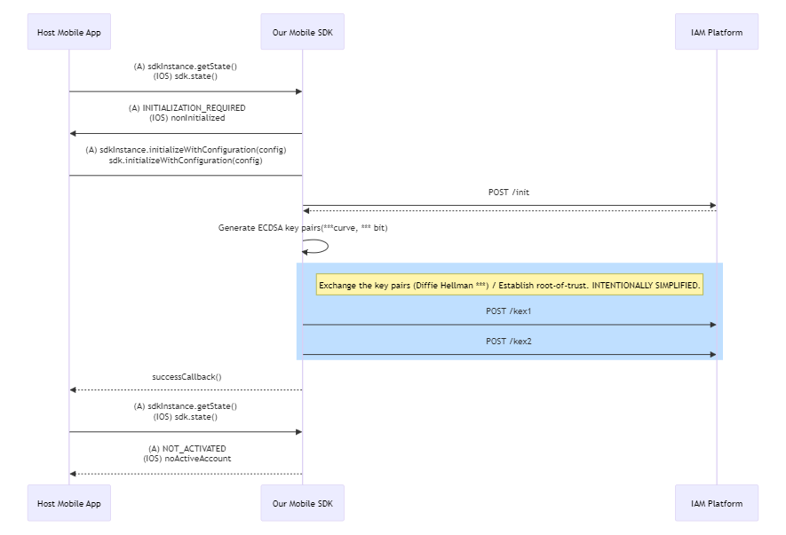

Technical security overview
You take the information security seriously and don’t want your service to be compromised. Meanwhile, your organization tries to strike a balance between the business objectives and the users’ preferences, while meeting the targets in confidentiality, integrity, and authenticity.
If you have a mobile app, your users' actions need to be authorized and accounted for. Evidently, a single factor authentication is not enough, but developing multi-factor authentication (MFA) in house and ensuring a smooth user experience at the same time is a tall order.
Our mobile SDK enables your business to authenticate the customers and workforce personnel using a mobile device and all supported verification methods. Moreover, you can complement the authentication with mobile threat detection (for example, detect jailbroken or rooted devices) and have the option to manage the user devices via the device management portal.
This document aims to explain how our mobile SDK can help you reduce the attack surface and manage security risks.
Functionality
The mobile SDK enables you to orchestrate web and mobile user authentication journeys, manage the device authenticators and collect related user and device data for risk analysis and machine learning.
The mobile SDK provides the following authentication methods for mobile and cross-channel scenarios:
| SDK hosted methods | Other authenticators |
|---|---|
| IAM Biometrics IAM Device Ownership IAM Pin IAM Behavioral Pin IAM Path IAM Behavioral Path IAM Soft Tokens |
SMS One Time Password (OTP) Email OTP Temporary Access Codes (TACs) Hardware Token OTP Externally Managed Authenticators |
You can use the mobile SDK to authenticate users on other channels where the platform has initiated a logon via Radius, SAML, or OIDC.
In addition to this, the mobile SDK can be used in combination with our Web Intelligence SDK, helping you correlate anomalies from the web and the mobile channels. The mobile SDK is available for iOS (ObjectiveC, Swift) and for Android (Java and Kotlin). Likewise, we provide multiple reference applications and comprehensive SDK documentation.
We’ve coded the cryptographic operations in C only, out of security concerns (e.g. memory management) and for performance reasons.
Our approaches
Your mobile app is likely to handle important data, with user identities high on the sensitivity scale. And as we take the security of your information seriously, we implemented a comprehensive security program which includes the following:
- Building a strong security architecture and implementing an in-depth defense
- Aligning the organization on information security best practices
- Training all personnel in security topics
Security architecture
We provide a secure service architecture through a combination of organizational and technical measures.
When it comes to the organization and the processes:
- All personnel are trained in the information security practices.
- We employ dedicated NOC and SOC teams who ensure a secure 24 / 7 service operation.
- We employ an internal red team, as well as external rotated pen testers and bug bounty hunters.
- We have a dedicated team of cryptography engineers.
- We are certified for ISO 27001 and SOC 2 (Type 2) compliance.
When it comes to the technology:
- The SDK has a root of trust process allowing it to establish a secure channel
- The SDK always protects data in-transit and at-rest.
- The SDK has a set of pre-defined checks that:
- ensure that the SDK is running in an adequately secure environment;
- provide data collection capabilities that enable additional security controls.
Root of Trust process
Callsign provides an additional layer of encryption on top of TLS; we refer this to as a secure channel. This secure channel must be established at SDK initialization and therefore the SDK can be initialized over an insecure channel.
To ensure the connection is secure, the mobile SDK provides a Root of Trust that is similar to CA certificates. This ensures that the mobile SDK is communicating with the same Callsign server as expected.
First, the mobile SDK performs TLS pinning. You can specify your own certificate pinning hashes for on-premise deployments or use Callsign’s certificate hashes for SaaS deployments at SDK initialization. The certificate pinning ensures that the server we connect over TLS is indeed the expected one, mitigating any man-in-the-middle (MITM) threats.
Then, we use an embedded ED25519 public key on the mobile device to verify the platform’s response signature when performing a key exchange to establish the secure channel. Here, only a server with the private key associated with the embedded public key can sign a genuine response, assuring that we performed the key exchange with the correct server.
Data-in-transit security
The data-in-transit is always protected through an additional layer on top of the TLS.
The diagram below shows the methods you need to implement in your app, as well as the encryption measures implemented at our end for secure data transmission:

As a result of the above process, the SDK establishes a secure channel between your mobile app and the Callsign platform.
On the network level, we ensure the data security through a strong perimeter around the platform components, protected mobile gateways, and use of battle-proven algorithms such as AES 256 GCM.
Data-at-rest security
We protect the mobile SDK’s data at rest through strong encryption in the device’s secure storage area, the iOS Secure Enclave or Android Secure Element. The secure storage area may be backed by a trusted execution environment (TEE) that provides additional layers of security to prevent unauthorized access or tampering of the data.
Runtime security controls
We’ve developed a toolset of safeguards and mitigations for a smoother day-to-day operation of the services, contributing to your service’s overall runtime security. You can find some of these safeguards and mitigations in the table below:
| Issue type | Safeguards / mitigations | Notes |
|---|---|---|
| Device compromise | Root / jailbreak detection, debugger detection, location spoofer detection, Man-in-the-middle (MITM) protection | For example, the mobile SDK initiates a secure connection with the platform using Diffie-Hellmann key exchange to mitigate the MITM threat. |
| SDK compromise | Swizzle protection, hooking protection, tamper protection, resource modification protection, anti-cloning protection | The SDK only detects threats against the SDK itself and provide protection to the mobile host application. |
| User compromise | Behavioral replay detection, tap-jacking protection, screen-sharing protection, emulator detection. |
Conclusion
Callsign provides many more security features than described on this page. For further details on how our security measures may help you, contact your client account manager.